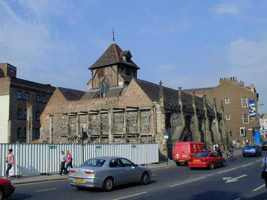

Welcome to YCG!
The development of a Students' Bellringing Society in York can be traced back to the expansion of Higher
Education in the 1950's.
The first organised student ringing took place late in 1962 with the formation of a bellringing society
at St John's College. The initiators of this group were Michael King from Wentworth, South Yorkshire,
and Ray Aldington from Kings Norton, Birmingham. They organised ringing on Wednesday evenings at the
former church of St John in Micklegate, which at that time was The Institute of Advanced Architectural
Studies. It subsequently became York Arts Centre, and is currently disused.
The bells at St John's were an ancient ring of six, but had been rehung in a new bellframe and on new
fittings in 1954.

Former Church of St John (Photo: Gareth Foster)
The St John's College Bellringers' Society continued to expand during the 1960's and held a full
programme of ringing events, including an annual tour. They also organised handbell ringing and
purchased a secondhand set of 24 handbells.
The University of York grew slowly in various historic buildings in the city centre during the 1950's.
The first undergraduates were accepted in 1963 and the Heslington campus was ready for occupation in
October 1965. In that year, Derek Jones from Spalding, came as an undergraduate. Together with another
ringer, Christina Folkes from St Albans, he took the first tentative steps towards forming The
University of York Society of Bellringers. The earliest activity of this group can be traced to October
1967.
In September 1969, David Potter came to St John's College. He restarted ringing at the former church of
St John, where ringing had ceased. The belltower had become unsafe after the demolition of the adjoining
building and required remedial strengthening. This had been completed in 1968.
By this date, both St John's Society and the University Society were becoming weak. David Potter met
with Derek Jones to discuss joining student bellringers into one unified group. The idea seemed a
logical step since neither group was large enough to definitely survive if it remained independent.
The decision to form The York Colleges Guild of Bell Ringers was taken in November 1969 and its first
meeting took place at the former church of St John in January 1970.
The York Colleges Guild has operated continuously since its foundation, operating a full programme of
ringing and social events throughout each academic year.
Although bellringers have been mainly recruited from The University of York and York St John, other
members have come from Askham Bryan Agricultural College, York College of Arts & Technology, The Law
College and York Sixth Form College.
The York Colleges Guild of Bell Ringers is a flourishing organisation. It now rings at various towers in
the city centre, most usually The Spurriergate Centre (formerly St Michael's Church, Spurriergate) and
St Lawrence's Church